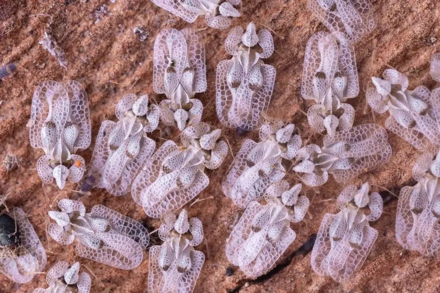

昆虫 · 动物界
悬铃木方翅网蝽 Corythucha ciliata

危害悬铃木叶片的小型网蝽，成虫翅面呈网格状，群集叶背刺吸汁液，导致叶片失绿发白，是城市行道树害虫。
- 分类
- 门节肢动物门纲昆虫纲目半翅目科网蝽科属方翅网蝽属
- 栖息环境
- 悬铃木（法国梧桐）叶片背面，城市行道树和苗圃
- 地理分布
- 原产北美，现扩散至欧洲、亚洲多地
- 保护级别
- 暂无评估；城市行道树害虫
物种志
悬铃木方翅网蝽成虫体长约 3–4 mm，身体扁平，前胸背板和前翅呈网格状，翅面半透明，体色灰白至淡褐色，停歇时外形像一小片网纱。若虫体色较浅，群集在叶背。
它原产北美，随苗木贸易传入欧洲和亚洲，现已成为悬铃木（法国梧桐）的重要害虫。成虫和若虫群集在叶片背面刺吸汁液，导致叶片出现白色斑点、失绿发黄，严重时提早落叶，影响城市行道树的景观和生长。它一年发生多代，以成虫在树皮缝和落叶中越冬。防治以树干注药、喷洒低毒药剂、清理落叶和加强检疫为主，城市绿化中应避免从疫区调运苗木，发现虫害及时处理。
形态与习性
- 食性成虫和若虫刺吸悬铃木叶片汁液
- 体长约 3–4 mm
- 识别前胸背板和前翅呈网格状，体灰白至淡褐色
- 危害叶片失绿发白，严重时提早落叶
- 防治树干注药、低毒药剂、清理落叶和加强检疫
趣味知识
- 悬铃木方翅网蝽的前翅像一层半透明的网纱。
- 它群集在叶背吸汁，叶片会出现密密麻麻的白点。
- 这种网蝽原产北美，如今已成为欧洲和亚洲的行道树害虫。